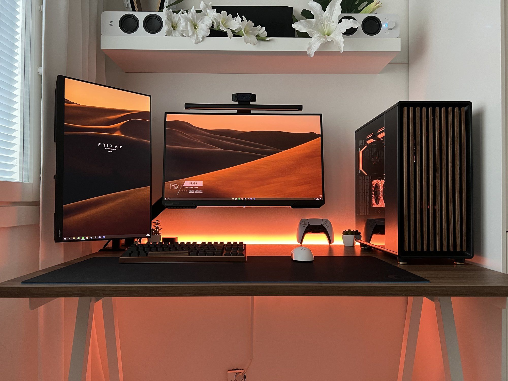
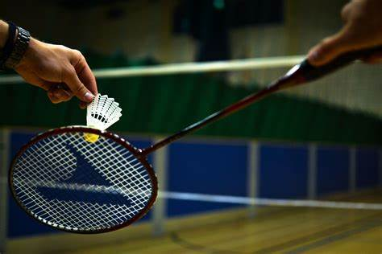

Gaming
I'm an avid gamer with particular interest in competitive and strategic games. Gaming serves as both entertainment and a way to enhance cognitive abilities like quick decision-making and teamwork.
Favorite Games:
- Valorant: Competitive tactical shooter that tests reflexes and strategy
- Dota 2: Complex MOBA requiring teamwork and game sense
- FIFA Series: Football simulation that combines sports knowledge with gaming skills
Through gaming, I've developed strong communication skills from team coordination and the ability to perform under pressure during ranked matches.
Badminton
Badminton is my physical activity of choice, offering both health benefits and competitive excitement. I've been playing regularly for several years, both recreationally and in local competitions.
Key Aspects:
- Physical Fitness: Improves agility, reflexes, and cardiovascular health
- Strategy: Requires anticipating opponent's moves and court positioning
- Discipline: Regular practice to maintain and improve skills
Playing badminton has taught me perseverance and the importance of continuous self-improvement, lessons that translate well to academic and professional pursuits.